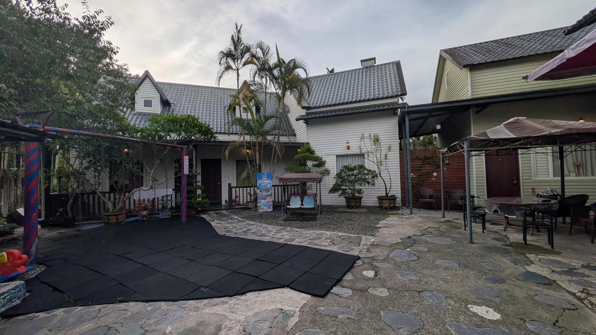
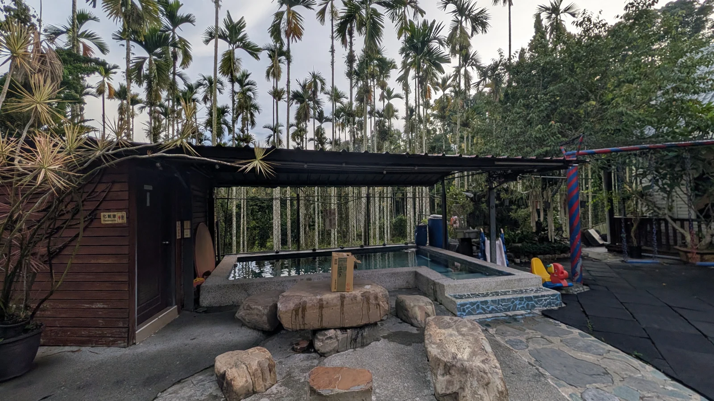
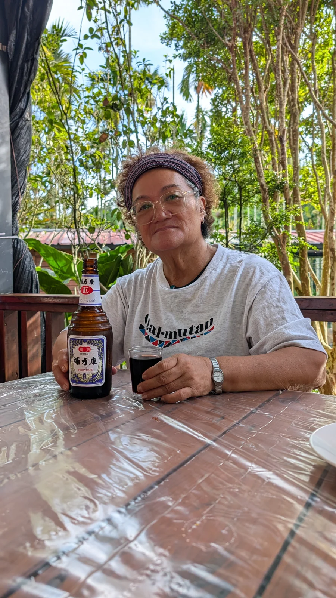
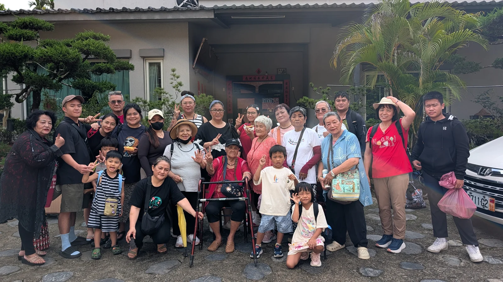
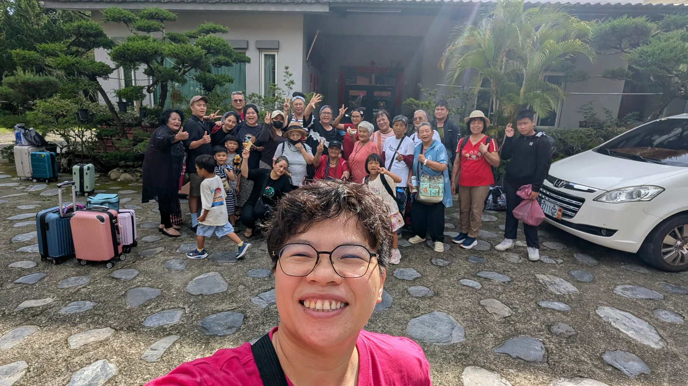

FAMILY JOURNAL / DAY 03
和家人一起，玩到最後一天 XD
最後一天，捨不得這麼快就結束。不過今天還有個很開心的事，Angle 也來了 XD。

01 / 最後一天早上
第三天了，也太快 XD
早上在民宿待一下，再看看院子和水池，就準備要離開了。才剛習慣這麼多人一起出門，居然已經第三天了 XD。




02 / 出發前再拍
出發前，大家一起來一張 XD
出發前，行李先放旁邊，長輩、小朋友都叫過來，大合照一定要的 XD。換我拿手機的時候，還要把後面的大家都帶進來，人多真的很考驗角度 XDDD。
這次也還好有家人一起幫忙記錄。我忙著安排事情，沒注意到的地方，後來看大家傳來的照片才補上了。




03 / Angle 也來了
最後一天，Angle 也來了 XD
中午和大家吃飯，Angle 也來了。她是我的朋友，不過對我和家人來說，她就是家人。隔天就要去加拿大的她，沒辦法跟我們一起玩滿三天，還好最後一天見到了。
家人看到她都很開心，一起和她合照，吃完飯到了餐廳門口也繼續拍 XDDD。大家也祝福她，到了加拿大要平平安安、開開心心的。能在她出發前再聚一下，真的很好。
後來收到家人說玩得很好、謝謝我忙前忙後，就覺得前面花時間安排很值得。這趟有回到雙龍和家人相聚，也有陪大家去九族玩，最後還見到了 Angle。看到你們開心，我也很開心 ^^。